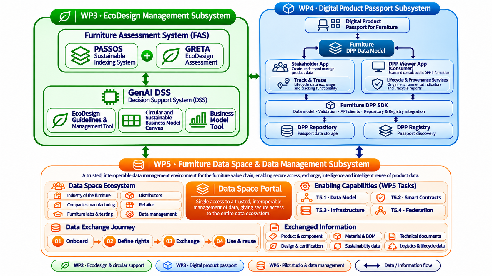

CIR4FUN system architecture
Select a component in the diagram to explore its role, main functions and Canva presentation.

Original architecture artwork · Interactive component overlay36 interactive areas
Select a component in the diagram to explore its role, main functions and Canva presentation.
